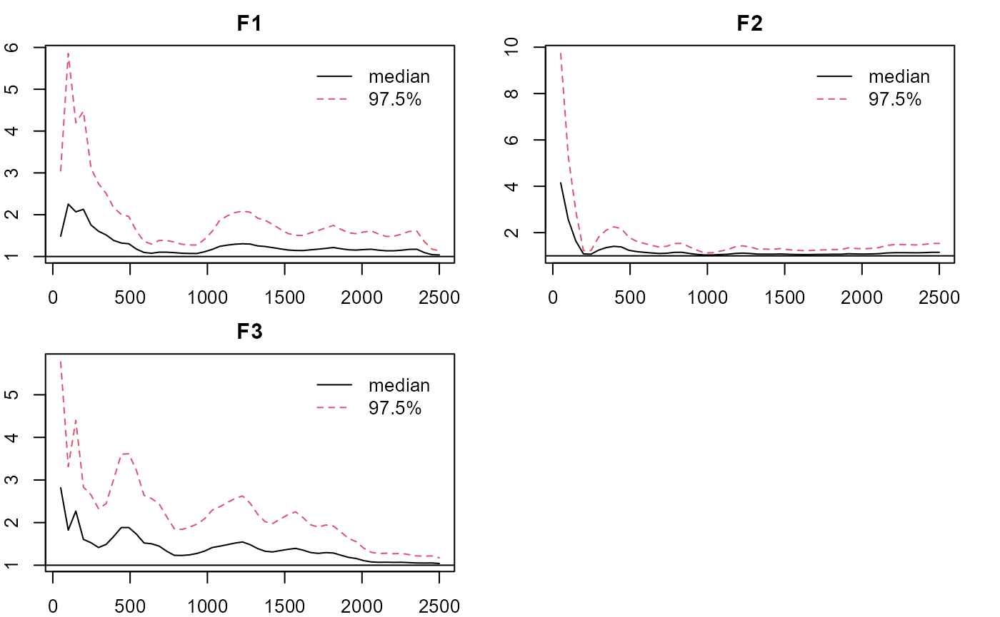
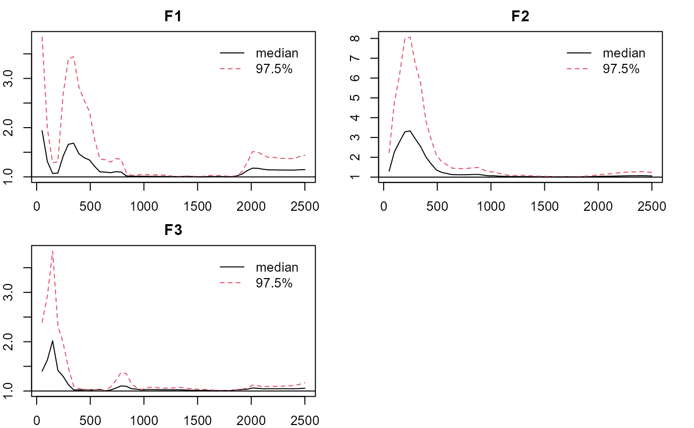

gpcfa-examples
Jinsong Chen
2021-04-01
Source:vignettes/Examples/gpcfa-examples.Rmd
gpcfa-examples.RmdNote: the estimation process can be time consuming depending on the computing power. You can same some time by reducing the length of the chains.
Categorical Data with Missingness but no Local Dependence:
- Load the package, obtain the data, and check the true loading pattern (qlam) and local dependence.
## LAWBL Package (version 1.4.0; 2021-04-01)
## For tutorials, see https://jinsong-chen.github.io/LAWBL/dat <- sim18ccfa40$dat dim(dat)
## [1] 1000 18summary(dat) #10% missingness at random
## V1 V2 V3 V4 V5
## Min. :1.000 Min. :1.00 Min. :1.000 Min. :1.000 Min. :1.000
## 1st Qu.:2.000 1st Qu.:2.00 1st Qu.:2.000 1st Qu.:2.000 1st Qu.:2.000
## Median :2.000 Median :2.00 Median :2.000 Median :2.000 Median :2.000
## Mean :2.446 Mean :2.47 Mean :2.471 Mean :2.454 Mean :2.479
## 3rd Qu.:3.000 3rd Qu.:3.00 3rd Qu.:3.000 3rd Qu.:3.000 3rd Qu.:3.000
## Max. :4.000 Max. :4.00 Max. :4.000 Max. :4.000 Max. :4.000
## NA's :86 NA's :103 NA's :98 NA's :101 NA's :102
## V6 V7 V8 V9
## Min. :1.000 Min. :1.000 Min. :1.000 Min. :1.000
## 1st Qu.:2.000 1st Qu.:2.000 1st Qu.:2.000 1st Qu.:2.000
## Median :2.000 Median :2.000 Median :3.000 Median :3.000
## Mean :2.459 Mean :2.472 Mean :2.538 Mean :2.499
## 3rd Qu.:3.000 3rd Qu.:3.000 3rd Qu.:3.000 3rd Qu.:3.000
## Max. :4.000 Max. :4.000 Max. :4.000 Max. :4.000
## NA's :105 NA's :99 NA's :94 NA's :99
## V10 V11 V12 V13
## Min. :1.000 Min. :1.000 Min. :1.000 Min. :1.000
## 1st Qu.:2.000 1st Qu.:2.000 1st Qu.:2.000 1st Qu.:2.000
## Median :2.000 Median :2.000 Median :2.000 Median :3.000
## Mean :2.486 Mean :2.477 Mean :2.481 Mean :2.553
## 3rd Qu.:3.000 3rd Qu.:3.000 3rd Qu.:3.000 3rd Qu.:3.000
## Max. :4.000 Max. :4.000 Max. :4.000 Max. :4.000
## NA's :99 NA's :100 NA's :98 NA's :90
## V14 V15 V16 V17
## Min. :1.000 Min. :1.000 Min. :1.000 Min. :1.000
## 1st Qu.:2.000 1st Qu.:2.000 1st Qu.:2.000 1st Qu.:2.000
## Median :2.000 Median :3.000 Median :2.500 Median :2.000
## Mean :2.478 Mean :2.529 Mean :2.511 Mean :2.475
## 3rd Qu.:3.000 3rd Qu.:3.000 3rd Qu.:3.000 3rd Qu.:3.000
## Max. :4.000 Max. :4.000 Max. :4.000 Max. :4.000
## NA's :84 NA's :107 NA's :100 NA's :107
## V18
## Min. :1.000
## 1st Qu.:2.000
## Median :2.000
## Mean :2.478
## 3rd Qu.:3.000
## Max. :4.000
## NA's :108J <- ncol(dat) # no. of items K <- 3 # no. of factors sim18ccfa40$qlam
## [,1] [,2] [,3]
## [1,] 0.7 0.0 0.0
## [2,] 0.7 0.0 0.0
## [3,] 0.7 0.0 0.0
## [4,] 0.7 0.0 0.0
## [5,] 0.7 0.3 0.0
## [6,] 0.7 0.3 0.0
## [7,] 0.0 0.7 0.0
## [8,] 0.0 0.7 0.0
## [9,] 0.0 0.7 0.0
## [10,] 0.0 0.7 0.0
## [11,] 0.0 0.7 0.3
## [12,] 0.0 0.7 0.3
## [13,] 0.0 0.0 0.7
## [14,] 0.0 0.0 0.7
## [15,] 0.0 0.0 0.7
## [16,] 0.0 0.0 0.7
## [17,] 0.3 0.0 0.7
## [18,] 0.3 0.0 0.7sim18ccfa40$LD
## row col- E-step: Estimate with the GPCFA-LI model (E-step) by setting LD=F and the design matrix Q. Only a few loadings need to be specified in Q (e.g., 2 per factor). Longer chain is suggested for more accurate and stable estimation.
Q<-matrix(-1,J,K); # -1 for unspecified items Q[1:2,1]<-Q[7:8,2]<-Q[13:14,3]<-1 # 1 for specified items Q
## [,1] [,2] [,3]
## [1,] 1 -1 -1
## [2,] 1 -1 -1
## [3,] -1 -1 -1
## [4,] -1 -1 -1
## [5,] -1 -1 -1
## [6,] -1 -1 -1
## [7,] -1 1 -1
## [8,] -1 1 -1
## [9,] -1 -1 -1
## [10,] -1 -1 -1
## [11,] -1 -1 -1
## [12,] -1 -1 -1
## [13,] -1 -1 1
## [14,] -1 -1 1
## [15,] -1 -1 -1
## [16,] -1 -1 -1
## [17,] -1 -1 -1
## [18,] -1 -1 -1m0 <- pcfa(dat = dat, Q = Q,LD = FALSE, cati = -1,burn = 5000, iter = 5000) # summarize basic information summary(m0)
## $N
## [1] 1000
##
## $J
## [1] 18
##
## $K
## [1] 3
##
## $`Miss%`
## [1] 9.888889
##
## $`LD enabled`
## [1] FALSE
##
## $`Burn in`
## [1] 5000
##
## $Iteration
## [1] 5000
##
## $`No. of sig lambda`
## [1] 22
##
## $`True Factor`
## [1] TRUE TRUE TRUE
##
## $`Adj. PSR`
## Point est. Upper C.I.
## F1 1.168813 1.589921
## F2 1.123249 1.434969
## F3 1.551454 3.040701
##
## $`Cat Items`
## [1] 1 2 3 4 5 6 7 8 9 10 11 12 13 14 15 16 17 18
##
## $`max No. of categories`
## [1] 4#summarize significant loadings in pattern/Q-matrix format summary(m0, what = 'qlambda')
## [,1] [,2] [,3]
## I1 0.7470813 0.0000000 0.0000000
## I2 0.7469799 0.0000000 0.0000000
## I3 0.7534614 0.0000000 0.0000000
## I4 0.7684897 0.0000000 0.0000000
## I5 0.7678448 0.0000000 0.0000000
## I6 0.7241107 0.0000000 0.0000000
## I7 0.0000000 0.7444318 0.0000000
## I8 0.0000000 0.7392437 0.0000000
## I9 0.0000000 0.7358287 0.0000000
## I10 0.0000000 0.7093832 0.0000000
## I11 0.0000000 0.7092814 0.2583239
## I12 0.0000000 0.7008721 0.2594831
## I13 0.0000000 0.0000000 0.7461803
## I14 0.0000000 0.0000000 0.7190055
## I15 0.0000000 0.0000000 0.7290541
## I16 0.0000000 0.0000000 0.7108990
## I17 0.2902949 0.0000000 0.7341466
## I18 0.3103483 0.0000000 0.6710737#factorial eigenvalue summary(m0,what='eigen')
## est sd lower upper sig
## F1 3.696344 0.5583636 2.810720 4.901359 1
## F2 3.422220 0.4450367 2.605953 4.234215 1
## F3 3.344961 0.4490338 2.636775 4.356926 1#thresholds for categorical items summary(m0,what='thd')
## [,1] [,2] [,3]
## I1 -1.351199 0.06999432 1.616127
## I2 -1.431605 0.05648020 1.496300
## I3 -1.452837 0.05602236 1.506748
## I4 -1.379048 0.05923405 1.601463
## I5 -1.423075 0.01849127 1.472291
## I6 -1.493860 0.08109099 1.581201
## I7 -1.498788 0.04119980 1.658147
## I8 -1.516024 -0.05547308 1.409281
## I9 -1.468052 -0.01078843 1.504462
## I10 -1.486997 0.01257489 1.632816
## I11 -1.440967 0.02241078 1.568123
## I12 -1.524066 0.01893782 1.630107
## I13 -1.564688 -0.05795227 1.399717
## I14 -1.416532 0.04510418 1.498348
## I15 -1.552445 -0.03005641 1.473084
## I16 -1.468548 -0.01262426 1.379623
## I17 -1.439127 0.05542006 1.489189
## I18 -1.523471 0.03274176 1.545856#plotting factorial eigenvalue plot_lawbl(m0) # trace
plot_lawbl(m0, what='density') #density
plot_lawbl(m0, what='APSR') #adj, PSRF

- C-step: Reconfigure the Q matrix for the C-step with one specified loading per item based on results from the E-step. Estimate with the GPCFA model by setting LD=TRUE (by default). Longer chain is suggested for more accurate and stable estimation.
Q<-matrix(-1,J,K); tmp<-summary(m0, what="qlambda") cind<-apply(tmp,1,which.max) Q[cbind(c(1:J),cind)]<-1 #alternatively #Q[1:6,1]<-Q[7:12,2]<-Q[13:18,3]<-1 # 1 for specified items m1 <- pcfa(dat = dat, Q = Q, cati = -1) summary(m1)
## $N
## [1] 1000
##
## $J
## [1] 18
##
## $K
## [1] 3
##
## $`Miss%`
## [1] 9.888889
##
## $`LD enabled`
## [1] TRUE
##
## $`Burn in`
## [1] 5000
##
## $Iteration
## [1] 5000
##
## $`No. of sig lambda`
## [1] 24
##
## $`True Factor`
## [1] TRUE TRUE TRUE
##
## $`Adj. PSR`
## Point est. Upper C.I.
## F1 1.016584 1.065011
## F2 1.085361 1.325836
## F3 1.064638 1.251080
##
## $`No. of sig LD terms`
## [1] 0
##
## $`Cat Items`
## [1] 1 2 3 4 5 6 7 8 9 10 11 12 13 14 15 16 17 18
##
## $`max No. of categories`
## [1] 4summary(m1, what = 'qlambda')
## [,1] [,2] [,3]
## I1 0.7238055 0.0000000 0.0000000
## I2 0.7195271 0.0000000 0.0000000
## I3 0.7304142 0.0000000 0.0000000
## I4 0.7390217 0.0000000 0.0000000
## I5 0.7381667 0.2593938 0.0000000
## I6 0.7043545 0.2527068 0.0000000
## I7 0.0000000 0.7346631 0.0000000
## I8 0.0000000 0.7367582 0.0000000
## I9 0.0000000 0.7380866 0.0000000
## I10 0.0000000 0.7111037 0.0000000
## I11 0.0000000 0.7121962 0.2294576
## I12 0.0000000 0.7096055 0.2382995
## I13 0.0000000 0.0000000 0.7387332
## I14 0.0000000 0.0000000 0.7241039
## I15 0.0000000 0.0000000 0.7321767
## I16 0.0000000 0.0000000 0.7173299
## I17 0.2438975 0.0000000 0.7356949
## I18 0.2711053 0.0000000 0.6664329summary(m1, what = 'offpsx') #summarize significant LD terms
## row col est sd lower upper sigsummary(m1,what='eigen')
## est sd lower upper sig
## F1 3.408158 0.4172022 2.590907 4.183740 1
## F2 3.363211 0.3202467 2.723087 4.007203 1
## F3 3.330305 0.4118841 2.543400 4.173439 1summary(m1,what='thd')
## [,1] [,2] [,3]
## I1 -1.352839 0.06479896 1.607756
## I2 -1.455689 0.05106114 1.495153
## I3 -1.453921 0.04983174 1.493988
## I4 -1.384643 0.05066046 1.592999
## I5 -1.426836 0.01017969 1.458785
## I6 -1.492183 0.07487485 1.561647
## I7 -1.495630 0.03898259 1.645087
## I8 -1.531981 -0.05905942 1.414536
## I9 -1.458326 -0.01196820 1.495100
## I10 -1.497100 0.01088945 1.629651
## I11 -1.456014 0.01953700 1.561467
## I12 -1.526660 0.01796933 1.617324
## I13 -1.576035 -0.06484614 1.384641
## I14 -1.423995 0.03805522 1.493143
## I15 -1.554145 -0.03862907 1.465456
## I16 -1.468129 -0.01931734 1.368333
## I17 -1.443438 0.04736137 1.474455
## I18 -1.535884 0.02269320 1.531681#plotting factorial eigenvalue plot_lawbl(m1) # trace

plot_lawbl(m1, what='density') #density

plot_lawbl(m1, what='APSR') #adj, PSRF

- CFA-LD: One can also configure the Q matrix for a CCFA model with local dependence (i.e. without any unspecified loading) based on results from the C-step.
Q<-summary(m1, what="qlambda") Q[Q!=0]<-1 Q
## [,1] [,2] [,3]
## I1 1 0 0
## I2 1 0 0
## I3 1 0 0
## I4 1 0 0
## I5 1 1 0
## I6 1 1 0
## I7 0 1 0
## I8 0 1 0
## I9 0 1 0
## I10 0 1 0
## I11 0 1 1
## I12 0 1 1
## I13 0 0 1
## I14 0 0 1
## I15 0 0 1
## I16 0 0 1
## I17 1 0 1
## I18 1 0 1## $N
## [1] 1000
##
## $J
## [1] 18
##
## $K
## [1] 3
##
## $`Miss%`
## [1] 9.888889
##
## $`LD enabled`
## [1] TRUE
##
## $`Burn in`
## [1] 5000
##
## $Iteration
## [1] 5000
##
## $`No. of sig lambda`
## [1] 24
##
## $`True Factor`
## [1] TRUE TRUE TRUE
##
## $`Adj. PSR`
## Point est. Upper C.I.
## F1 1.000819 1.003532
## F2 1.055044 1.192538
## F3 1.010847 1.052297
##
## $`No. of sig LD terms`
## [1] 0
##
## $`Cat Items`
## [1] 1 2 3 4 5 6 7 8 9 10 11 12 13 14 15 16 17 18
##
## $`max No. of categories`
## [1] 4summary(m2, what = 'qlambda')
## [,1] [,2] [,3]
## I1 0.7090500 0.0000000 0.0000000
## I2 0.7213644 0.0000000 0.0000000
## I3 0.6971869 0.0000000 0.0000000
## I4 0.7297254 0.0000000 0.0000000
## I5 0.7033540 0.3024723 0.0000000
## I6 0.6926330 0.3020785 0.0000000
## I7 0.0000000 0.6811371 0.0000000
## I8 0.0000000 0.7520893 0.0000000
## I9 0.0000000 0.6926514 0.0000000
## I10 0.0000000 0.6863778 0.0000000
## I11 0.0000000 0.6775910 0.3041235
## I12 0.0000000 0.7003153 0.3352545
## I13 0.0000000 0.0000000 0.7071722
## I14 0.0000000 0.0000000 0.7258889
## I15 0.0000000 0.0000000 0.6988146
## I16 0.0000000 0.0000000 0.7230080
## I17 0.2921718 0.0000000 0.6846302
## I18 0.3193496 0.0000000 0.6646113summary(m2, what = 'offpsx')
## row col est sd lower upper sigsummary(m2,what='eigen')
## est sd lower upper sig
## F1 3.217739 0.1911156 2.843478 3.587929 1
## F2 3.128661 0.1897129 2.745301 3.495768 1
## F3 3.169486 0.1898309 2.815336 3.558232 1summary(m2,what='thd')
## [,1] [,2] [,3]
## I1 -1.344518 0.075495581 1.621377
## I2 -1.433092 0.065534134 1.506235
## I3 -1.441784 0.060770300 1.505111
## I4 -1.376093 0.063966172 1.601956
## I5 -1.415787 0.024261623 1.471323
## I6 -1.473530 0.090635227 1.561873
## I7 -1.488776 0.040890915 1.635478
## I8 -1.513653 -0.055749242 1.406124
## I9 -1.461665 -0.007824417 1.496090
## I10 -1.483462 0.014064836 1.628580
## I11 -1.450946 0.026492034 1.573256
## I12 -1.522682 0.024337165 1.641521
## I13 -1.560113 -0.057736157 1.398038
## I14 -1.412733 0.048514230 1.509009
## I15 -1.536978 -0.025502158 1.468484
## I16 -1.451655 -0.009943313 1.370929
## I17 -1.432464 0.061338917 1.496152
## I18 -1.511866 0.040039665 1.553230plot_lawbl(m2) # Eigens' traces are excellent without regularization of the loadings
Categorical Data with Missingness and Local Dependence:
- Obtain the data and check the true loading pattern (qlam) and local dependence.
dat <- sim18ccfa41$dat summary(dat) #10% missingness at random
## V1 V2 V3 V4
## Min. :1.000 Min. :1.000 Min. :1.000 Min. :1.000
## 1st Qu.:2.000 1st Qu.:2.000 1st Qu.:2.000 1st Qu.:2.000
## Median :3.000 Median :3.000 Median :2.000 Median :2.000
## Mean :2.505 Mean :2.497 Mean :2.496 Mean :2.506
## 3rd Qu.:3.000 3rd Qu.:3.000 3rd Qu.:3.000 3rd Qu.:3.000
## Max. :4.000 Max. :4.000 Max. :4.000 Max. :4.000
## NA's :84 NA's :101 NA's :104 NA's :95
## V5 V6 V7 V8 V9
## Min. :1.000 Min. :1.000 Min. :1.00 Min. :1.000 Min. :1.000
## 1st Qu.:2.000 1st Qu.:2.000 1st Qu.:2.00 1st Qu.:2.000 1st Qu.:2.000
## Median :3.000 Median :3.000 Median :2.00 Median :3.000 Median :2.000
## Mean :2.524 Mean :2.515 Mean :2.49 Mean :2.532 Mean :2.499
## 3rd Qu.:3.000 3rd Qu.:3.000 3rd Qu.:3.00 3rd Qu.:3.000 3rd Qu.:3.000
## Max. :4.000 Max. :4.000 Max. :4.00 Max. :4.000 Max. :4.000
## NA's :84 NA's :104 NA's :85 NA's :94 NA's :112
## V10 V11 V12 V13 V14
## Min. :1.000 Min. :1.000 Min. :1.000 Min. :1.0 Min. :1.000
## 1st Qu.:2.000 1st Qu.:2.000 1st Qu.:2.000 1st Qu.:2.0 1st Qu.:2.000
## Median :3.000 Median :3.000 Median :3.000 Median :3.0 Median :3.000
## Mean :2.514 Mean :2.503 Mean :2.502 Mean :2.5 Mean :2.503
## 3rd Qu.:3.000 3rd Qu.:3.000 3rd Qu.:3.000 3rd Qu.:3.0 3rd Qu.:3.000
## Max. :4.000 Max. :4.000 Max. :4.000 Max. :4.0 Max. :4.000
## NA's :125 NA's :105 NA's :96 NA's :118 NA's :86
## V15 V16 V17 V18
## Min. :1.000 Min. :1.000 Min. :1.000 Min. :1.00
## 1st Qu.:2.000 1st Qu.:2.000 1st Qu.:2.000 1st Qu.:2.00
## Median :3.000 Median :3.000 Median :3.000 Median :3.00
## Mean :2.528 Mean :2.515 Mean :2.503 Mean :2.53
## 3rd Qu.:3.000 3rd Qu.:3.000 3rd Qu.:3.000 3rd Qu.:3.00
## Max. :4.000 Max. :4.000 Max. :4.000 Max. :4.00
## NA's :116 NA's :89 NA's :120 NA's :110J <- ncol(dat) # no. of items K <- 3 # no. of factors sim18ccfa41$qlam
## [,1] [,2] [,3]
## [1,] 0.7 0.0 0.0
## [2,] 0.7 0.0 0.0
## [3,] 0.7 0.0 0.0
## [4,] 0.7 0.0 0.0
## [5,] 0.7 0.3 0.0
## [6,] 0.7 0.3 0.0
## [7,] 0.0 0.7 0.0
## [8,] 0.0 0.7 0.0
## [9,] 0.0 0.7 0.0
## [10,] 0.0 0.7 0.0
## [11,] 0.0 0.7 0.3
## [12,] 0.0 0.7 0.3
## [13,] 0.0 0.0 0.7
## [14,] 0.0 0.0 0.7
## [15,] 0.0 0.0 0.7
## [16,] 0.0 0.0 0.7
## [17,] 0.3 0.0 0.7
## [18,] 0.3 0.0 0.7sim18ccfa41$LD # effect size = .3
## row col
## [1,] 14 1
## [2,] 7 2
## [3,] 4 3
## [4,] 13 8
## [5,] 10 9
## [6,] 16 15- E-step: Estimate with the GPCFA-LI model (E-step) by setting LD=FALSE and the design matrix Q. Only a few loadings need to be specified in Q (e.g., 2 per factor). Some loading estimates are biased due to ignoring the LD. So do the eigenvalues.
Q<-matrix(-1,J,K); # -1 for unspecified items Q[1:2,1]<-Q[7:8,2]<-Q[13:14,3]<-1 # 1 for specified items Q
## [,1] [,2] [,3]
## [1,] 1 -1 -1
## [2,] 1 -1 -1
## [3,] -1 -1 -1
## [4,] -1 -1 -1
## [5,] -1 -1 -1
## [6,] -1 -1 -1
## [7,] -1 1 -1
## [8,] -1 1 -1
## [9,] -1 -1 -1
## [10,] -1 -1 -1
## [11,] -1 -1 -1
## [12,] -1 -1 -1
## [13,] -1 -1 1
## [14,] -1 -1 1
## [15,] -1 -1 -1
## [16,] -1 -1 -1
## [17,] -1 -1 -1
## [18,] -1 -1 -1## $N
## [1] 1000
##
## $J
## [1] 18
##
## $K
## [1] 3
##
## $`Miss%`
## [1] 10.15556
##
## $`LD enabled`
## [1] FALSE
##
## $`Burn in`
## [1] 5000
##
## $Iteration
## [1] 5000
##
## $`No. of sig lambda`
## [1] 23
##
## $`True Factor`
## [1] TRUE TRUE TRUE
##
## $`Adj. PSR`
## Point est. Upper C.I.
## F1 1.743127 3.084342
## F2 1.819195 3.321321
## F3 1.189623 1.660623
##
## $`Cat Items`
## [1] 1 2 3 4 5 6 7 8 9 10 11 12 13 14 15 16 17 18
##
## $`max No. of categories`
## [1] 4summary(m0, what = 'qlambda')
## [,1] [,2] [,3]
## I1 0.6535419 0.0000000 0.0000000
## I2 0.7296074 0.0000000 0.0000000
## I3 0.7994482 0.0000000 0.0000000
## I4 0.7953094 0.0000000 0.0000000
## I5 0.6905142 0.2582850 0.0000000
## I6 0.6579532 0.2545800 0.0000000
## I7 0.0000000 0.6134352 0.0000000
## I8 0.0000000 0.6229617 0.0000000
## I9 0.0000000 0.8282425 0.0000000
## I10 0.0000000 0.8129558 0.0000000
## I11 0.0000000 0.6051435 0.4246590
## I12 0.0000000 0.6155621 0.3716515
## I13 0.0000000 0.0000000 0.6921956
## I14 0.0000000 0.0000000 0.7306177
## I15 0.0000000 0.0000000 0.8608834
## I16 0.0000000 0.0000000 0.8537579
## I17 0.2477351 0.0000000 0.6845509
## I18 0.0000000 0.0000000 0.7253746summary(m0,what='eigen')
## est sd lower upper sig
## F1 3.429911 0.4407735 2.551135 4.261648 1
## F2 3.198657 0.4681164 2.322922 4.179138 1
## F3 3.937214 0.5643275 3.035403 5.044354 1summary(m0,what='thd')
## [,1] [,2] [,3]
## I1 -1.517472 -0.012546573 1.515352
## I2 -1.429516 -0.015652422 1.574586
## I3 -1.514421 0.034108830 1.536437
## I4 -1.629960 0.029255159 1.521125
## I5 -1.531741 -0.035494512 1.470833
## I6 -1.583416 -0.018736660 1.549973
## I7 -1.488022 -0.010508448 1.555503
## I8 -1.556280 -0.050596915 1.430322
## I9 -1.597629 -0.012094558 1.583315
## I10 -1.603205 -0.026761290 1.517897
## I11 -1.465884 -0.042339452 1.475105
## I12 -1.459352 -0.063993733 1.590317
## I13 -1.493609 -0.009460516 1.560101
## I14 -1.391688 -0.021987971 1.463883
## I15 -1.487039 -0.040468337 1.474052
## I16 -1.533620 -0.019202099 1.470229
## I17 -1.528647 -0.016266331 1.548143
## I18 -1.494894 -0.035207859 1.458515plot_lawbl(m0) # trace
plot_lawbl(m0, what='APSR')

- C-step: Reconfigure the Q matrix for the C-step with one specified loading per item based on results from the E-step. Estimate with the GPCFA model by setting LD=TRUE (by default). The estimates are more accurate, and the LD terms can be largely recovered.
Q<-matrix(-1,J,K); tmp<-summary(m0, what="qlambda") cind<-apply(tmp,1,which.max) Q[cbind(c(1:J),cind)]<-1 Q
## [,1] [,2] [,3]
## [1,] 1 -1 -1
## [2,] 1 -1 -1
## [3,] 1 -1 -1
## [4,] 1 -1 -1
## [5,] 1 -1 -1
## [6,] 1 -1 -1
## [7,] -1 1 -1
## [8,] -1 1 -1
## [9,] -1 1 -1
## [10,] -1 1 -1
## [11,] -1 1 -1
## [12,] -1 1 -1
## [13,] -1 -1 1
## [14,] -1 -1 1
## [15,] -1 -1 1
## [16,] -1 -1 1
## [17,] -1 -1 1
## [18,] -1 -1 1## $N
## [1] 1000
##
## $J
## [1] 18
##
## $K
## [1] 3
##
## $`Miss%`
## [1] 10.15556
##
## $`LD enabled`
## [1] TRUE
##
## $`Burn in`
## [1] 5000
##
## $Iteration
## [1] 5000
##
## $`No. of sig lambda`
## [1] 24
##
## $`True Factor`
## [1] TRUE TRUE TRUE
##
## $`Adj. PSR`
## Point est. Upper C.I.
## F1 1.065032 1.261820
## F2 1.075221 1.297387
## F3 1.020181 1.041782
##
## $`No. of sig LD terms`
## [1] 6
##
## $`Cat Items`
## [1] 1 2 3 4 5 6 7 8 9 10 11 12 13 14 15 16 17 18
##
## $`max No. of categories`
## [1] 4summary(m1, what = 'qlambda')
## [,1] [,2] [,3]
## I1 0.7020346 0.0000000 0.0000000
## I2 0.7267776 0.0000000 0.0000000
## I3 0.7278866 0.0000000 0.0000000
## I4 0.7325418 0.0000000 0.0000000
## I5 0.7209742 0.2365217 0.0000000
## I6 0.6956137 0.2433266 0.0000000
## I7 0.0000000 0.7027283 0.0000000
## I8 0.0000000 0.6876428 0.0000000
## I9 0.0000000 0.7815081 0.0000000
## I10 0.0000000 0.7617759 0.0000000
## I11 0.0000000 0.6878804 0.3348367
## I12 0.0000000 0.7143813 0.2784829
## I13 0.0000000 0.0000000 0.6935792
## I14 0.0000000 0.0000000 0.7304332
## I15 0.0000000 0.0000000 0.7784828
## I16 0.0000000 0.0000000 0.7645869
## I17 0.2357523 0.0000000 0.6902107
## I18 0.1734436 0.0000000 0.7264360summary(m1,what='eigen')
## est sd lower upper sig
## F1 3.269279 0.3728538 2.629325 4.133928 1
## F2 3.369630 0.3542040 2.740280 4.139618 1
## F3 3.517621 0.3665631 2.749966 4.218319 1summary(m1, what = 'offpsx')
## row col est sd lower upper sig
## var14 14 1 0.2293982 0.04672102 0.13726504 0.3176747 1
## var24 7 2 0.1982936 0.04208183 0.11598957 0.2807411 1
## var37 4 3 0.2088024 0.05827239 0.10187409 0.3223107 1
## var111 13 8 0.1960182 0.04486201 0.10405187 0.2813329 1
## var118 10 9 0.1960573 0.06959033 0.05337931 0.3279418 1
## var163 16 15 0.1960219 0.06960177 0.06831708 0.3461369 1summary(m1,what='thd')
## [,1] [,2] [,3]
## I1 -1.550963 -0.015608742 1.539909
## I2 -1.467889 -0.019195941 1.586531
## I3 -1.536865 0.026871046 1.546327
## I4 -1.645992 0.019048585 1.538239
## I5 -1.533529 -0.034490747 1.461225
## I6 -1.566648 -0.019828984 1.538564
## I7 -1.507570 -0.005855010 1.589924
## I8 -1.580162 -0.043326970 1.461640
## I9 -1.604547 -0.003369742 1.609787
## I10 -1.642252 -0.019172800 1.557670
## I11 -1.452057 -0.036565249 1.467326
## I12 -1.450847 -0.057717561 1.596809
## I13 -1.516219 -0.004890313 1.571577
## I14 -1.416079 -0.022337449 1.487826
## I15 -1.507431 -0.048538223 1.502420
## I16 -1.550517 -0.016331562 1.493697
## I17 -1.523334 -0.017744430 1.542299
## I18 -1.499676 -0.035447383 1.449234- CFA-LD: Configure the Q matrix for a CCFA model with local dependence (i.e. without any unspecified loading) based on results from the C-step. Results are better than, but similar to the C-step.
Q<-summary(m1, what="qlambda") Q[Q!=0]<-1 Q
## [,1] [,2] [,3]
## I1 1 0 0
## I2 1 0 0
## I3 1 0 0
## I4 1 0 0
## I5 1 1 0
## I6 1 1 0
## I7 0 1 0
## I8 0 1 0
## I9 0 1 0
## I10 0 1 0
## I11 0 1 1
## I12 0 1 1
## I13 0 0 1
## I14 0 0 1
## I15 0 0 1
## I16 0 0 1
## I17 1 0 1
## I18 1 0 1## $N
## [1] 1000
##
## $J
## [1] 18
##
## $K
## [1] 3
##
## $`Miss%`
## [1] 10.15556
##
## $`LD enabled`
## [1] TRUE
##
## $`Burn in`
## [1] 5000
##
## $Iteration
## [1] 5000
##
## $`No. of sig lambda`
## [1] 24
##
## $`True Factor`
## [1] TRUE TRUE TRUE
##
## $`Adj. PSR`
## Point est. Upper C.I.
## F1 1.000004 1.000028
## F2 1.062482 1.244593
## F3 1.001322 1.001540
##
## $`No. of sig LD terms`
## [1] 6
##
## $`Cat Items`
## [1] 1 2 3 4 5 6 7 8 9 10 11 12 13 14 15 16 17 18
##
## $`max No. of categories`
## [1] 4summary(m2, what = 'qlambda')
## [,1] [,2] [,3]
## I1 0.6896452 0.0000000 0.0000000
## I2 0.7144467 0.0000000 0.0000000
## I3 0.7215826 0.0000000 0.0000000
## I4 0.7225483 0.0000000 0.0000000
## I5 0.7011324 0.2726456 0.0000000
## I6 0.6782504 0.2874182 0.0000000
## I7 0.0000000 0.6975844 0.0000000
## I8 0.0000000 0.7035853 0.0000000
## I9 0.0000000 0.7543981 0.0000000
## I10 0.0000000 0.7512254 0.0000000
## I11 0.0000000 0.6463206 0.3926849
## I12 0.0000000 0.6724068 0.3536850
## I13 0.0000000 0.0000000 0.6927707
## I14 0.0000000 0.0000000 0.6984663
## I15 0.0000000 0.0000000 0.7627549
## I16 0.0000000 0.0000000 0.7444143
## I17 0.3170342 0.0000000 0.6915659
## I18 0.2451864 0.0000000 0.7190652summary(m2,what='eigen')
## est sd lower upper sig
## F1 3.159754 0.2095945 2.742603 3.552344 1
## F2 3.158372 0.1899761 2.771565 3.525299 1
## F3 3.394828 0.2086446 2.992990 3.800876 1summary(m2, what = 'offpsx')
## row col est sd lower upper sig
## var14 14 1 0.2655293 0.03670076 0.19127587 0.3330466 1
## var24 7 2 0.2267806 0.03674780 0.15045379 0.2950870 1
## var37 4 3 0.1987358 0.05601319 0.09501452 0.3130004 1
## var111 13 8 0.2165444 0.03561970 0.14598588 0.2850438 1
## var118 10 9 0.1810160 0.05183266 0.08561291 0.2871721 1
## var163 16 15 0.2000318 0.05110261 0.10348089 0.3007526 1summary(m2,what='thd')
## [,1] [,2] [,3]
## I1 -1.547432 -0.010167778 1.547159
## I2 -1.465675 -0.012705699 1.600399
## I3 -1.522241 0.033282340 1.549556
## I4 -1.641780 0.028416106 1.549377
## I5 -1.534453 -0.028038480 1.476149
## I6 -1.555389 -0.011334788 1.538691
## I7 -1.504177 -0.002289597 1.582083
## I8 -1.572167 -0.043189218 1.443540
## I9 -1.610935 -0.000701482 1.605113
## I10 -1.626494 -0.017315467 1.552809
## I11 -1.443939 -0.032746211 1.472820
## I12 -1.441339 -0.057512287 1.601435
## I13 -1.512219 -0.007872242 1.568882
## I14 -1.424062 -0.020091738 1.495395
## I15 -1.503867 -0.044981969 1.502002
## I16 -1.548618 -0.015390106 1.491239
## I17 -1.520741 -0.014349118 1.551171
## I18 -1.482838 -0.028923081 1.453479Mixed-type Data with Missingness and Local Dependence:
- Obtain the data and check the true loading pattern (qlam) and local dependence.
dat <- sim18mcfa41$dat summary(dat) #10% missingness at random
## V1 V2 V3 V4
## Min. :1.000 Min. :1.000 Min. :1.000 Min. :1.000
## 1st Qu.:2.000 1st Qu.:2.000 1st Qu.:2.000 1st Qu.:2.000
## Median :3.000 Median :3.000 Median :2.000 Median :2.000
## Mean :2.505 Mean :2.497 Mean :2.496 Mean :2.506
## 3rd Qu.:3.000 3rd Qu.:3.000 3rd Qu.:3.000 3rd Qu.:3.000
## Max. :4.000 Max. :4.000 Max. :4.000 Max. :4.000
## NA's :84 NA's :101 NA's :104 NA's :95
## V5 V6 V7 V8
## Min. :1.000 Min. :1.000 Min. :-2.81026 Min. :-3.23753
## 1st Qu.:2.000 1st Qu.:2.000 1st Qu.:-0.71029 1st Qu.:-0.62884
## Median :3.000 Median :3.000 Median :-0.00391 Median : 0.04407
## Mean :2.524 Mean :2.515 Mean :-0.01609 Mean : 0.05464
## 3rd Qu.:3.000 3rd Qu.:3.000 3rd Qu.: 0.64606 3rd Qu.: 0.76442
## Max. :4.000 Max. :4.000 Max. : 2.70247 Max. : 2.89557
## NA's :84 NA's :104 NA's :85 NA's :94
## V9 V10 V11 V12
## Min. :-3.30561 Min. :-3.02592 Min. :-3.41374 Min. :-2.82342
## 1st Qu.:-0.66089 1st Qu.:-0.61385 1st Qu.:-0.63676 1st Qu.:-0.67127
## Median :-0.00165 Median : 0.01598 Median : 0.01521 Median : 0.04094
## Mean : 0.00834 Mean : 0.02074 Mean : 0.00846 Mean : 0.01327
## 3rd Qu.: 0.68991 3rd Qu.: 0.69146 3rd Qu.: 0.70011 3rd Qu.: 0.69313
## Max. : 3.29942 Max. : 3.03966 Max. : 3.24879 Max. : 3.37976
## NA's :112 NA's :125 NA's :105 NA's :96
## V13 V14 V15 V16
## Min. :-2.91486 Min. :-3.35077 Min. :-3.79077 Min. :-2.98539
## 1st Qu.:-0.63790 1st Qu.:-0.68802 1st Qu.:-0.59432 1st Qu.:-0.65737
## Median : 0.01362 Median : 0.04734 Median : 0.07327 Median : 0.03254
## Mean : 0.01722 Mean : 0.00211 Mean : 0.04284 Mean : 0.01089
## 3rd Qu.: 0.69528 3rd Qu.: 0.67515 3rd Qu.: 0.73561 3rd Qu.: 0.69205
## Max. : 3.44561 Max. : 2.93371 Max. : 3.35474 Max. : 3.16500
## NA's :118 NA's :86 NA's :116 NA's :89
## V17 V18
## Min. :-2.72783 Min. :-2.98409
## 1st Qu.:-0.64767 1st Qu.:-0.68150
## Median : 0.02905 Median : 0.06052
## Mean : 0.00466 Mean : 0.03421
## 3rd Qu.: 0.63216 3rd Qu.: 0.71505
## Max. : 3.28462 Max. : 3.06039
## NA's :120 NA's :110J <- ncol(dat) # no. of items K <- 3 # no. of factors sim18mcfa41$qlam
## [,1] [,2] [,3]
## [1,] 0.7 0.0 0.0
## [2,] 0.7 0.0 0.0
## [3,] 0.7 0.0 0.0
## [4,] 0.7 0.0 0.0
## [5,] 0.7 0.3 0.0
## [6,] 0.7 0.3 0.0
## [7,] 0.0 0.7 0.0
## [8,] 0.0 0.7 0.0
## [9,] 0.0 0.7 0.0
## [10,] 0.0 0.7 0.0
## [11,] 0.0 0.7 0.3
## [12,] 0.0 0.7 0.3
## [13,] 0.0 0.0 0.7
## [14,] 0.0 0.0 0.7
## [15,] 0.0 0.0 0.7
## [16,] 0.0 0.0 0.7
## [17,] 0.3 0.0 0.7
## [18,] 0.3 0.0 0.7sim18mcfa41$LD # effect size = .3
## row col
## [1,] 14 1
## [2,] 7 2
## [3,] 4 3
## [4,] 13 8
## [5,] 10 9
## [6,] 16 15- E-step: Estimate with the GPCFA-LI model (E-step) by setting LD=FALSE and the design matrix Q. Only a few loadings need to be specified in Q (e.g., 2 per factor). The first 6 items are categorical and need to be specified with cati.
Q<-matrix(-1,J,K); # -1 for unspecified items Q[1:2,1]<-Q[7:8,2]<-Q[13:14,3]<-1 # 1 for specified items Q
## [,1] [,2] [,3]
## [1,] 1 -1 -1
## [2,] 1 -1 -1
## [3,] -1 -1 -1
## [4,] -1 -1 -1
## [5,] -1 -1 -1
## [6,] -1 -1 -1
## [7,] -1 1 -1
## [8,] -1 1 -1
## [9,] -1 -1 -1
## [10,] -1 -1 -1
## [11,] -1 -1 -1
## [12,] -1 -1 -1
## [13,] -1 -1 1
## [14,] -1 -1 1
## [15,] -1 -1 -1
## [16,] -1 -1 -1
## [17,] -1 -1 -1
## [18,] -1 -1 -1## $N
## [1] 1000
##
## $J
## [1] 18
##
## $K
## [1] 3
##
## $`Miss%`
## [1] 10.15556
##
## $`LD enabled`
## [1] FALSE
##
## $`Burn in`
## [1] 5000
##
## $Iteration
## [1] 5000
##
## $`No. of sig lambda`
## [1] 24
##
## $`True Factor`
## [1] TRUE TRUE TRUE
##
## $`Adj. PSR`
## Point est. Upper C.I.
## F1 1.012621 1.027956
## F2 1.028442 1.074916
## F3 1.199897 1.705071
##
## $`Cat Items`
## [1] 1 2 3 4 5 6
##
## $`max No. of categories`
## [1] 4summary(m0, what = 'qlambda')
## [,1] [,2] [,3]
## I1 0.6860867 0.0000000 0.0000000
## I2 0.7551740 0.0000000 0.0000000
## I3 0.8106803 0.0000000 0.0000000
## I4 0.8032818 0.0000000 0.0000000
## I5 0.6820260 0.2724433 0.0000000
## I6 0.6417186 0.2763634 0.0000000
## I7 0.0000000 0.6563469 0.0000000
## I8 0.0000000 0.6776368 0.0000000
## I9 0.0000000 0.8658312 0.0000000
## I10 0.0000000 0.8636898 0.0000000
## I11 0.0000000 0.6824455 0.2988852
## I12 0.0000000 0.6808556 0.2835842
## I13 0.0000000 0.0000000 0.6693577
## I14 0.0000000 0.0000000 0.6703358
## I15 0.0000000 0.0000000 0.8628385
## I16 0.0000000 0.0000000 0.8808630
## I17 0.2687598 0.0000000 0.6598029
## I18 0.2132182 0.0000000 0.6829870summary(m0,what='eigen')
## est sd lower upper sig
## F1 3.527802 0.5692549 2.608298 4.708889 1
## F2 3.618798 0.4832884 2.739668 4.537452 1
## F3 3.642069 0.7319048 2.409897 5.078596 1summary(m0,what='thd') # only for 12 items
## [,1] [,2] [,3]
## I1 -1.517770 -0.01451217 1.521619
## I2 -1.436172 -0.01718558 1.577374
## I3 -1.521977 0.02973533 1.530485
## I4 -1.621967 0.02527026 1.514197
## I5 -1.536060 -0.03919136 1.482473
## I6 -1.560327 -0.01898020 1.540328plot_lawbl(m0) # trace

plot_lawbl(m0, what='density')
plot_lawbl(m0, what='APSR')

- C-step: Reconfigure the Q matrix for the C-step with one specified loading per item based on results from the E-step. Estimate with the GPCFA model by setting LD=TRUE (by default). The estimates are more accurate, and the LD terms can be largely recovered.
Q<-matrix(-1,J,K); tmp<-summary(m0, what="qlambda") cind<-apply(tmp,1,which.max) Q[cbind(c(1:J),cind)]<-1 Q
## [,1] [,2] [,3]
## [1,] 1 -1 -1
## [2,] 1 -1 -1
## [3,] 1 -1 -1
## [4,] 1 -1 -1
## [5,] 1 -1 -1
## [6,] 1 -1 -1
## [7,] -1 1 -1
## [8,] -1 1 -1
## [9,] -1 1 -1
## [10,] -1 1 -1
## [11,] -1 1 -1
## [12,] -1 1 -1
## [13,] -1 -1 1
## [14,] -1 -1 1
## [15,] -1 -1 1
## [16,] -1 -1 1
## [17,] -1 -1 1
## [18,] -1 -1 1## $N
## [1] 1000
##
## $J
## [1] 18
##
## $K
## [1] 3
##
## $`Miss%`
## [1] 10.15556
##
## $`LD enabled`
## [1] TRUE
##
## $`Burn in`
## [1] 5000
##
## $Iteration
## [1] 5000
##
## $`No. of sig lambda`
## [1] 24
##
## $`True Factor`
## [1] TRUE TRUE TRUE
##
## $`Adj. PSR`
## Point est. Upper C.I.
## F1 1.008681 1.009341
## F2 1.023025 1.074373
## F3 1.016880 1.063663
##
## $`No. of sig LD terms`
## [1] 6
##
## $`Cat Items`
## [1] 1 2 3 4 5 6
##
## $`max No. of categories`
## [1] 4summary(m1, what = 'qlambda')
## [,1] [,2] [,3]
## I1 0.6997448 0.0000000 0.0000000
## I2 0.7091570 0.0000000 0.0000000
## I3 0.7633360 0.0000000 0.0000000
## I4 0.7645865 0.0000000 0.0000000
## I5 0.6916939 0.2505979 0.0000000
## I6 0.6693638 0.2637897 0.0000000
## I7 0.0000000 0.6887075 0.0000000
## I8 0.0000000 0.6893640 0.0000000
## I9 0.0000000 0.7440632 0.0000000
## I10 0.0000000 0.7351133 0.0000000
## I11 0.0000000 0.6815939 0.3114801
## I12 0.0000000 0.7096071 0.2799075
## I13 0.0000000 0.0000000 0.7083969
## I14 0.0000000 0.0000000 0.6838347
## I15 0.0000000 0.0000000 0.7318026
## I16 0.0000000 0.0000000 0.7429206
## I17 0.2572881 0.0000000 0.6930631
## I18 0.1990184 0.0000000 0.7205509summary(m1,what='eigen')
## est sd lower upper sig
## F1 3.273822 0.3043010 2.726234 3.909604 1
## F2 3.228493 0.2965070 2.634286 3.813646 1
## F3 3.314271 0.3139733 2.709981 3.959500 1summary(m1, what = 'offpsx')
## row col est sd lower upper sig
## var14 14 1 0.2607469 0.04699623 0.17319758 0.3593842 1
## var24 7 2 0.2458028 0.04162793 0.16374730 0.3272939 1
## var37 4 3 0.1602409 0.07785975 0.01219928 0.2926235 1
## var111 13 8 0.2419595 0.03997140 0.16233401 0.3192247 1
## var118 10 9 0.2503130 0.05207279 0.15062518 0.3474794 1
## var163 16 15 0.2495054 0.05376882 0.14623017 0.3470156 1summary(m1,what='thd')
## [,1] [,2] [,3]
## I1 -1.545868 -0.01788894 1.524788
## I2 -1.468640 -0.02108230 1.578568
## I3 -1.527394 0.02192893 1.538049
## I4 -1.633848 0.01877515 1.521840
## I5 -1.527218 -0.03511236 1.469053
## I6 -1.555695 -0.02407485 1.534608- CFA-LD: Configure the Q matrix for a mix of CFA and CCFA model with local dependence (i.e. without any unspecified loading) based on results from the C-step. Results are better than, but similar to the C-step.
Q<-summary(m1, what="qlambda") Q[Q!=0]<-1 Q
## [,1] [,2] [,3]
## I1 1 0 0
## I2 1 0 0
## I3 1 0 0
## I4 1 0 0
## I5 1 1 0
## I6 1 1 0
## I7 0 1 0
## I8 0 1 0
## I9 0 1 0
## I10 0 1 0
## I11 0 1 1
## I12 0 1 1
## I13 0 0 1
## I14 0 0 1
## I15 0 0 1
## I16 0 0 1
## I17 1 0 1
## I18 1 0 1## $N
## [1] 1000
##
## $J
## [1] 18
##
## $K
## [1] 3
##
## $`Miss%`
## [1] 10.15556
##
## $`LD enabled`
## [1] TRUE
##
## $`Burn in`
## [1] 5000
##
## $Iteration
## [1] 5000
##
## $`No. of sig lambda`
## [1] 24
##
## $`True Factor`
## [1] TRUE TRUE TRUE
##
## $`Adj. PSR`
## Point est. Upper C.I.
## F1 1.015229 1.055327
## F2 1.009823 1.026333
## F3 1.013405 1.063951
##
## $`No. of sig LD terms`
## [1] 6
##
## $`Cat Items`
## [1] 1 2 3 4 5 6
##
## $`max No. of categories`
## [1] 4summary(m2, what = 'qlambda')
## [,1] [,2] [,3]
## I1 0.6836948 0.0000000 0.0000000
## I2 0.6986690 0.0000000 0.0000000
## I3 0.7409062 0.0000000 0.0000000
## I4 0.7365149 0.0000000 0.0000000
## I5 0.6879585 0.2887507 0.0000000
## I6 0.6789142 0.2942874 0.0000000
## I7 0.0000000 0.6943069 0.0000000
## I8 0.0000000 0.7003363 0.0000000
## I9 0.0000000 0.7340521 0.0000000
## I10 0.0000000 0.7539543 0.0000000
## I11 0.0000000 0.6693336 0.3353828
## I12 0.0000000 0.6936047 0.3078274
## I13 0.0000000 0.0000000 0.7037352
## I14 0.0000000 0.0000000 0.6702571
## I15 0.0000000 0.0000000 0.7644933
## I16 0.0000000 0.0000000 0.7680776
## I17 0.3100832 0.0000000 0.6858937
## I18 0.2520836 0.0000000 0.7107616summary(m2,what='eigen')
## est sd lower upper sig
## F1 3.157303 0.1912377 2.775341 3.520603 1
## F2 3.191263 0.1846549 2.838204 3.557190 1
## F3 3.313601 0.1839206 2.961472 3.670397 1summary(m2, what = 'offpsx')
## row col est sd lower upper sig
## var14 14 1 0.2946215 0.03340491 0.22978155 0.3574691 1
## var24 7 2 0.2782111 0.03264195 0.21444669 0.3436082 1
## var37 4 3 0.1763281 0.06092839 0.04871427 0.2877401 1
## var111 13 8 0.2518820 0.02921886 0.19731980 0.3119885 1
## var118 10 9 0.2316527 0.04837936 0.13651588 0.3275462 1
## var163 16 15 0.2091024 0.04819548 0.11118521 0.2964535 1summary(m2,what='thd')
## [,1] [,2] [,3]
## I1 -1.533165 -0.01148457 1.523756
## I2 -1.459176 -0.01967878 1.583826
## I3 -1.528648 0.03095373 1.553033
## I4 -1.624416 0.02404774 1.533836
## I5 -1.528641 -0.03297019 1.471595
## I6 -1.552228 -0.02131627 1.541190